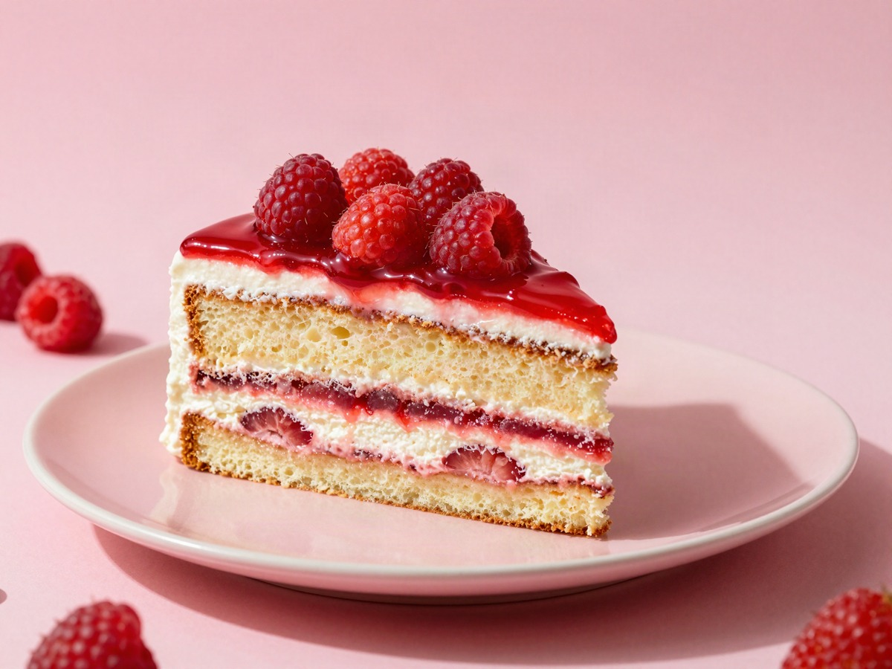
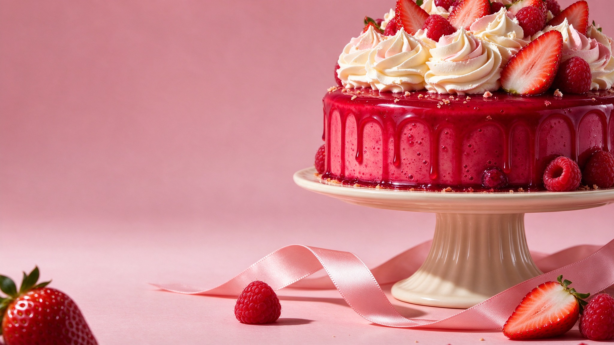
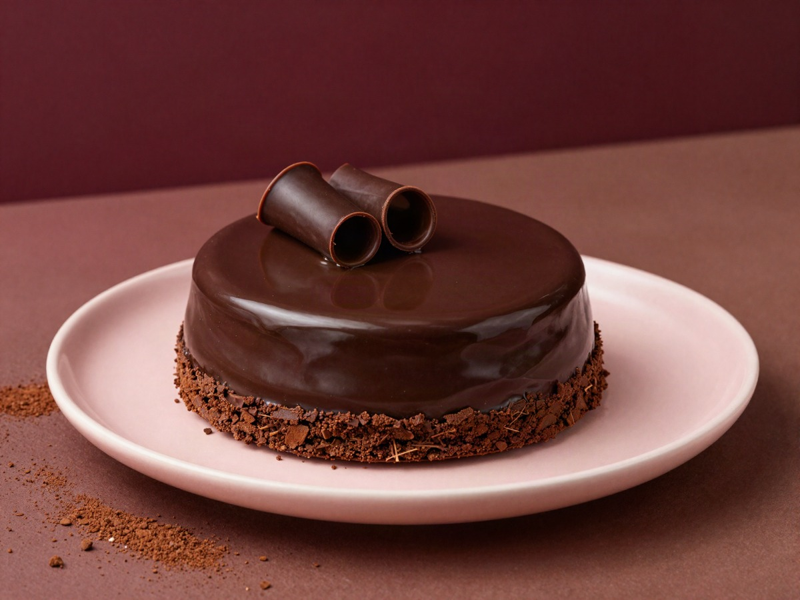
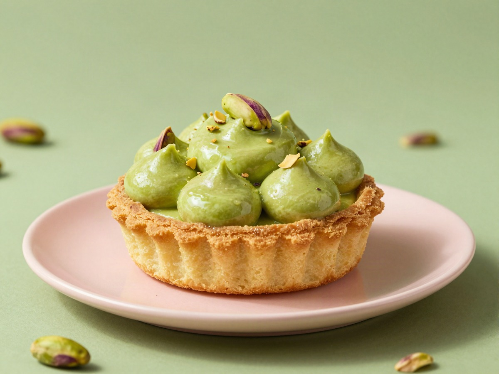
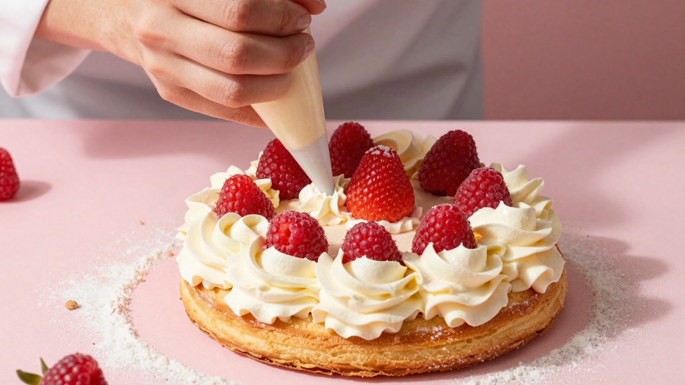

Frutos rojos
La frescura de la fruta se encuentra con una crema suave. Una combinación para enamorarte.
Fresco y delicado

Pastelería fina, antojos enormes.
Un pequeño sueño hecho delicia en Puente Alto.
Fruta, crema y ese antojo que no se negocia. Encuentra tu próximo favorito.

La frescura de la fruta se encuentra con una crema suave. Una combinación para enamorarte.

Una textura sedosa, un sabor profundo y un final que te invita a otro bocado.

Crema delicada y una base crujiente. Un pequeño placer con mucha personalidad.
Hay momentos que merecen algo especial. Una celebración, una visita, una tarde cualquiera. Siempre hay una buena razón para compartir una delicia.

Una roseta de crema. El brillo de la fruta. Ese equilibrio entre lo suave y lo crujiente. La pastelería también se disfruta con los ojos.
Nos encuentras en Puente Alto, Santiago. Busca Mon Rêve Don Carlos y ven a descubrir tu nuevo favorito.
Ver ubicación